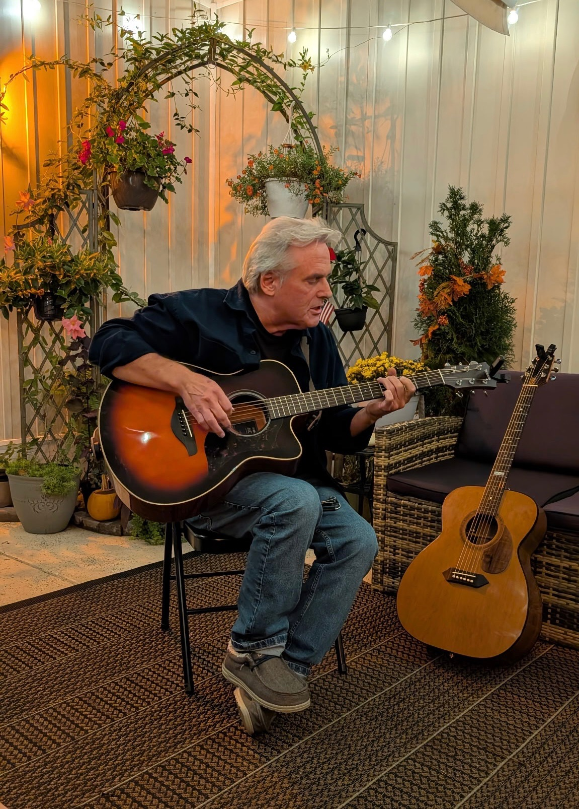

About
Bill Meehan
Music has always been at the heart of my life. From the moment I
wrote my first song at 15, I’ve been drawn to the power of
storytelling through melody and lyrics, exploring emotions and
experiences that connect with listeners on a personal level. As a
singer-songwriter, I strive to create songs that are both
authentic and timeless, blending heartfelt vocals with intricate
guitar work to bring each story to life.
Born and
raised on Long Island, New York, my life has been shaped by a deep
appreciation for community, family, and the rich musical
traditions of the area. I have been married to my wonderful wife
since 1980, and together we raised three children who continue to
inspire and motivate me every day. I am also proud to be a
grandfather to two granddaughters, whose curiosity and love of
music remind me of why I fell in love with creating songs in the
first place. My passion for music extends beyond performing.
I am also an avid vinyl collector. Each record I own
tells its own story, capturing moments in time and the unique
character of the artists who created them. Listening to music on
vinyl, especially recordings made in mono, gives me a deeper
appreciation for the textures, warmth, and depth of sound that
digital formats often miss. This combination of songwriting and
collecting has shaped the way I understand music: every note,
chord, and lyric matters, and every record is a piece of musical
history. Whether composing a new song, performing live, or
curating a vinyl collection, I am constantly learning,
experimenting, and striving to share the beauty of music in its
truest form. For me, the guitar is more than an instrument it is a
storyteller, a companion, and a bridge between the past and the
present, allowing me to honor musical traditions while creating
something uniquely my own. Every song I write reflects not only my
experiences but also the love, family, and life that have
surrounded me from childhood through today.
Favorites
Top Three Albums
All Things Must Pass
George Harrison
Released on November 27, 1970
Blonde on Blonde
Bob Dylan
Released on June 20, 1966
The White Album
The Beatles
Released on November 22, 1968